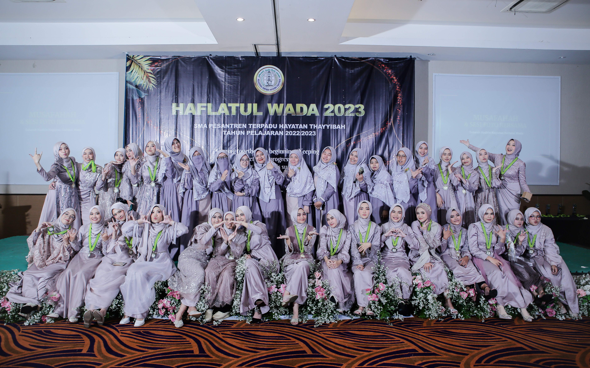

RECTOVERSO


KELUARGA BESAR RECTOVERSO 23
Saya tidak akan pernah melupakan momen-momen berkesan yang pernah kita alami bersama. Siapa yang tidak ingat saat kita semua menangis terharu saat wisuda, saat kita akhirnya berhasil menyelesaikan studi kita dengan hasil yang memuaskan. Masih ingat saat kita semua tertawa ngakak saat nonton film horor bersama, saat kita saling menggoda dan menakut-nakuti satu sama lain.
Saya juga tidak akan pernah lupa saat kita semua berjuang bersama menghadapi ujian akhir, saat kita saling membantu dan belajar sampai larut malam.
Sahabat-sahabatku, angkatan tercinta. Saya ingin mengungkapkan harapan dan doa saya untuk kalian semua. Semoga kita semua selalu sehat, bahagia, dan sukses di masa depan. Jangan pernah menyerah dan terus berusaha untuk mencapai mimpi-mimpi kita.
Semoga Allah SWT senantiasa melindungi dan memberkati kita semua. Amin.Saya harap deskripsi ini bisa membuat kalian semua terharu dan tersenyum. Saya sayang kalian semua. 😊